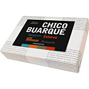
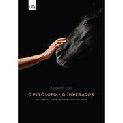

Os Lançamentos
Caixa Chico Buarque:4 Titulos
Francisco Buarque de Hollanda nasceu no Rio de Janeiro, em 19 de junho de 1944, mas sua família mudou-se para São Paulo quando tinha dois anos - foi morar no Rio apenas em 1970, após seu exílio na Itália. Modelador de palavras, tem o dom único de descrever sentimentos como quem vive cada dor ou alegria, fala por nós, e não há quem, alguma vez na vida, ao ouvir suas composições, não tenha jurado que Chico esteve por um momento em sua alma para ter conseguido descrever a emoção indescritível.
Na Cozinha Com Caroina:Vol. 1
Quando vemos um livro de cozinha de Carolina Ferraz, a primeira pergunta que vem à cabeça é: "Ué, mas a Carolina Ferraz cozinha?" Desde pequena, na cozinha de sua mãe em Goiânia, Carolina já fazia alquimias culinárias. Às vezes acertava, às vezes estragava ingredientes e até panelas. Foi assim que aprendeu a cozinhar, a desenvolver suas próprias receitas e ter prazer em dar prazer aos outros. Sem pretensões de ser uma chef, ela se autodenomina uma "Dona Benta Pop. Uma mulher que trabalha, tem uma vida ocupada, mas que ama cozinhar pra família e pros amigos".
Por Acaso: A Criação do Facebook
A excitante história de como dois estudantes desenturmados de Harvard, que tentavam aumentar suas chances com o sexo oposto, criaram o site de relacionamento que se tornou uma das mais poderosas empresas do mundo, o FACEBOOK. Bilionários por Acaso : A Criação do Facebook é uma aventura real, que envolve investidores poderosos, mulheres maravilhosas, a busca do estrelato social e muitas intrigas. De forma divertida e interessante, narra o fim da inocência no ritmo da criação controversa da rede social que revolucionou a maneira como milhões de pessoas se relacionam.
O Filósofo e o Imperador
Nesta obra, a vida de Aristóteles assim como suas fraquezas, anseios e medos são o foco da história. Suas maiores virtudes vêm à tona a partir do momento em que é intimado a educar Alexandre, o grande. Um enorme desafio para ele, que sabe dos interesses envolvidos. Da obrigação de estarem juntos nasce uma relação de pai e filho e é a partir do olhar inteligente e ao mesmo tempo apaixonante de Aristóteles, que presenciamos guerras, festas, conspirações, alianças e despedidas. Um convite a uma viagem no tempo e na intimidade desse grande filósofo.